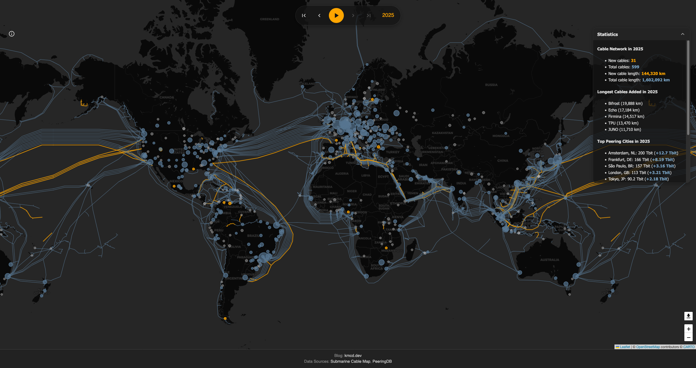
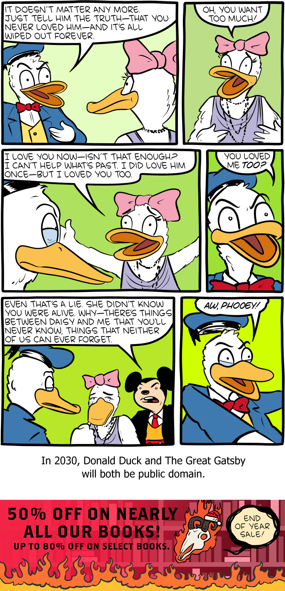

Three Predictions For The Web
Date: 2025-12-03
Last Updated: 2025-12-03

KMCD Visualizing The Internet
The theme for this months IndieWeb Carnival is where do you see the IndieWeb in 2030 and is hosted by V.H Belvadi. I thought this was a great excuse to yap about my politics, what I want to see in the world (and what I think will actually happen). So I am making three predictions. What I would like to see in the next 5 years, what I expect to happen, and what I think the biggest risks are. I'm not sure what portion of my readers are famiiar with the "IndieWeb" as a concept, vs how many I have from the IndieWeb.
Note: To be honest, I actually have no idea how many readers I have - no tracking ofc - though I am confident it is at least 3, because that's how many emails I have received from readers lol)
1 Predictions
1.1 The Optimistic
1.1.1 Event Pages
As the popularity of Meta products decreases, "LinkTree" and their competitors come up with "EventPages" and create a spec for standardised event sharing across different platforms. This enables platform agnostic event sharing for peoples music gigs, personal parties, and more, with the organisers no having to remember to keep every page up to date, since there is only one page. Furthermore, the events can spread organically even to platforms the organiser isn't on, since it is standardised. This means that an a band can plan their gig on EventPages and posted to Facebook, but a fam can share it too mastodon with a few button presses.
This idea is somewhat personal for me, since leaving Instagram and Facebook I keep on missing out on local events and music gigs because the advertising doesn't make it to me anymore. That is really sad for me, since there are a lot of tiny local bands I really like supporting.
If anyone wants to take this idea and run with it to build a spec please feel free to. I don't have the technical acumen to build it myself so the idea is free real estate, but I really think there is something solid in the idea.
1.1.2 Forum Revival
With legal pressure high on Meta and other U.S based platforms, non-U.S. governments and other orgs start encouraging community groups to move away from Facebook Groups and other meta products for community organising. In response, small independent forums experiance a resurgance in popularity as they become the new norm for organising local communities, including local sports teams, suburban community groups and music sharing.
This will be helped by increased "re-shoring" efforts of many Western Governments to bring "technological sovereignty" to web infrastructure, reducing our reliance on such a small group of American companies. This results in a whole bunch of small, local web hosting services popping up in each country, offering forum hosting with the servers within the country with technical and legal structures especially tailored for their respective markets.
1.1.3 The longest shot - Adversarial Interop
Cory Doctorow's recommendations on laws encouraging "Adversarial Interoperability" are passed. Not long after, the walls around Facebook, Twitter and Tiktok's gardens begin to erode.
The platforms do not die a sudden and violent death, bringing down all the creators with them. Instead the metaphor of the web comes back in force, with links between all aspects of the web blossoming. No longer is the internet "five websites, each filled with screenshots of the other four", instead we return to a vast interconnected WEB of links. The platforms are forced to improve user experiance if they want to keep their users, since RSS and data protability means users can use whatever apps or websites they want to follow whoever they want. Now that people have nothing to lose, no longer a hostage to the network effect, people are empowered to move to the IndeWeb and setup their personal space on the web.
Zoomers of course are at the forefront of the migration to the indieweb, because they are young and that's what young people do. Millennials are soon to follow as see the revival of the internet that they lost, Xers and Boomers are not far off and by 2035 it is not uncommon for a Boomer to have their own website following a drag and drop template they made and deployed off of their iPhone.
1.2 Realistic
I think the most realistic prediction is slow growth, and maturation and then merge back into the "normal" web.
To shove a hamfisted music metaphor in there, it is kind of like the realtionship between dance-punk and postpunk. Where every 20 years, people remember that dance-punk is a thing and it breaks out of the postpunk scene growing as its own microgenre, before re-merging back into the postpunk scene. Middle 8 has a great video essay about the historyof the subgenre and this phenomenon
Right now, the "indieweb" is a reactionary blip to the corporatization of the internet. What we call the "IndieWeb" is what the web used to be, and what (byits namesake at least), it should be. How can you call Instagram part of a "web" or a "network" when they don't even let you post links off its app? That's not a web!!!
To quote Starbreaker speaking on the topic of the Indieweb as a concept:
I don't particularly like the fact that we seem to need so many names for what I think ought to be the default. In my opinion, sites like this one, fyr.io, and even Neocities and omg.lol are the World Wide Web. Sites like Facebook, Amazon, YouTube, LinkedIn, and Twitter are the corporate Web. They're parasitic abberations, walled gardens gentrifying the internet, and an attempt by business people to turn the internet into cable TV with a comments section. We should not accept the premise that they are what the web is or should be.
So my prediction: I think social media will continue to frustrate people, and the rise of authoritarianism will cause people to flee the mainstream platforms increasing the population of the IndieWeb for the next few years. The population of the IndieWeb will spike, then fall back to a more stable value (maybe a little higher than it is today). A large number of people create an neocities page, updating it once or twice and then forgetting about it. And overtime, this movement will merge back into the "World Wide Web"
It will stay niche and on the edge, but that's okay, because the the edge is where the taste-makers live
The other, smaller prediction: Eventually the Y2K revival revival trend on the web will die, and the culture converges to prioritize readability and user experience. Then by the late 2030s people will realize the 2010s was 20 years before, and we will see a twenty-teen revival trend - whatever that will look like.
1.3 Pessimistic
Expansion of government digital ID's and various "think of the children" laws will eventually make their way all the way to personal blogs. China's freedom crushing "Great Firewall" gets re-branded in the West as "Securing our National Internet" and the world-wide-web becomes a bunch of national fiefdoms, where it's users are restricted from moving between them.
At first users try to circumvent this using VPNs, but not long after governments introduce Know-Your-Customer rules (KYC) to Commercial VPNs which restrict their ability to spoof national borders. KYC laws have been around in finance for decades, it isn't a stretch to apply them to VPNs accepting credit-cards. The most technically savy start to setup their own VPNs on Virtual Private Servers (VPS) they rent themselves. There is only a matter of time before governments start leaning on ISP companies to introduce packet sniffing techniques to identify these underground VPNs and shut them down.
This global lockdown takes the indieweb down with them. Owning a website will require registration with the government including your ID, and mandatory registration details on the footer of each page that anyone can look up the websites owner. This is justified as "Cracking down on misinformation and cyber-bullying", but also ends any chance at pseudoanonymity on the web.
As a result the entire concept of the indieweb becomes a niche article on Wikipedia with a particularly angry discussion section between its editors, all of whom claim to be authorities because they were part of it back in its heyday.
2 Conclusion
I really hope my pessimistic predictions do not come true, but it is hard not to be nervous about it while living in Australia with our new teen social media ban and all its associated privacy risks. While I put my most optimistic predictions about adversarial interop as unlikely, I do not think it is impossible. A good political movement with the right spark could definately bring it about. It used to be the norm after all.
Finally, one bonus prediction from Saturday Morning Breakfast Cereal

Link
3 Further Reading:
- Only one item on my list this time and that is Cory Doctorow's "The Internet Con". He clearly inspired a lot of my thoughts here, as evident by THREE citations he got in one blogpost, but he also puts forward a thorough plan on how to achieve my most optimistic predictions in his book.